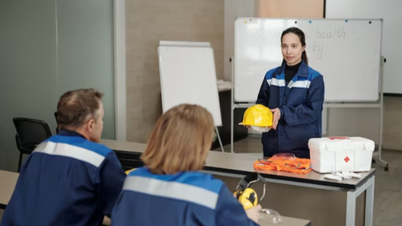

Unlock The Power Of Leadership With Chief Warden Training
Leadership is a critical component of any organization, particularly those tasked with ensuring the safety and security of the public. This is especially true of correctional facilities, where effective leadership can mean the difference between order and chaos. The role of the chief warden is pivotal in overseeing the management of a correctional facility. They are responsible for the development and implementation of security protocols, maintaining a safe and secure environment for staff and inmates, and ensuring compliance with state and federal regulations.
Mastering the art of leadership in the context of correctional facilities is no easy feat. It requires a unique set of skills, knowledge, and experience that only come through comprehensive training and education. Chief wardens must be able to effectively communicate with staff and inmates, manage conflicts, and make critical decisions under pressure. For more information on chief warden training, visit Metrofire.
Chief Warden Training Course Overview:
1. Comprehending The Responsibilities Of The Head Warden:
- Investigating the duties and anticipations of a Head Guardian.
- Recognizing the fundamental traits and characteristics essential for successful leadership.

2. Preparation And Response For Emergencies
- Evaluating possible hazards and dangers in different scenarios.
- Creating contingency measures and procedures for emergencies.
- Undertaking practice sessions and simulations to guarantee readiness.
- Managing communication channels in times of crisis.
3. Management of Security and Safety.
- Creating measures and guidelines to ensure security.
- Enforcing security protocols through access control measures and monitoring with surveillance systems.
- Performing evaluations to identify potential risks and weaknesses.
- Recognizing and reducing the risk of security violations.
- Working together with appropriate parties to improve safety protocols.
4. Decision Making and Crisis Management:
- Comprehending the fundamentals of handling a crisis.
- Being able to make sound judgments when facing time constraints.
- Creating plans for managing communication during a crisis and maintaining positive relationships with the public.
- Examining actual situations and case studies for practical implementation.
5. Building teams and leading them.
- Developing proficient leadership abilities.
- Encouraging and spurring on teams in times of crisis.
- Establishing robust connections with team members and stakeholders.
- Managing difficult situations and resolving conflicts.
6. Considerations of a legal and ethical nature:
- Getting acquainted with security and safety-related legal obligations and regulations.
- Making sure that privacy laws and data protection regulations are followed.
- Maintaining moral principles in the field of security and emergency management.
Benefits of Chief Warden Training
1. Improved Leadership Abilities:
The Chief Warden training program emphasizes the cultivation of robust leadership traits that are crucial. Attendees will acquire the essential abilities to competently lead and oversee teams in crisis situations, instill assurance, and make sound judgments while under stress.
2. Thorough understanding:
The training program encompasses several subjects, such as emergency readiness, security administration, crisis management, and legal aspects. By participating in it, individuals will obtain a comprehensive comprehension of the duties and prerequisites of a Chief Warden, which will empower them to effectively manage different safety and security issues.
3. Application in practice:
The emphasis of the program is on practical learning, which is achieved through the use of case studies, simulations, and real-life scenarios. The participants will be given chances to apply what they have learned and their skills in simulated emergency situations. This provides them with hands-on experience and better preparation for real-world incidents.
Visit Metrofire Pty Ltd Here
Metrofire Pty Ltd
GPO Box 1766 Melbourne VIC 3001, Australia
+61 3 9583 3535
4. Enhanced Emergency Assistance:
Chief Wardens can ensure the safety of individuals and assets, minimize risks, and reduce response times by implementing effective emergency response plans and protocols. The training provides participants with the necessary tools and strategies to handle emergencies efficiently.
5. Enhanced Security Protocols:
By acquiring the skills to evaluate risks, detect weaknesses, and establish strong security measures such as access control, surveillance systems, risk assessments, and mitigation strategies, participants will be able to assist Chief Wardens in creating a more secure environment for their organization and stakeholders.
In conclusion, the Chief Warden Training Program is an essential tool for effective security and safety management. This comprehensive training program equips participants with the necessary skills and knowledge to manage emergency situations and maintain a safe work environment. By mastering leadership skills, chief wardens can effectively implement emergency response plans, communicate effectively with staff, and ensure the safety of everyone in the workplace.